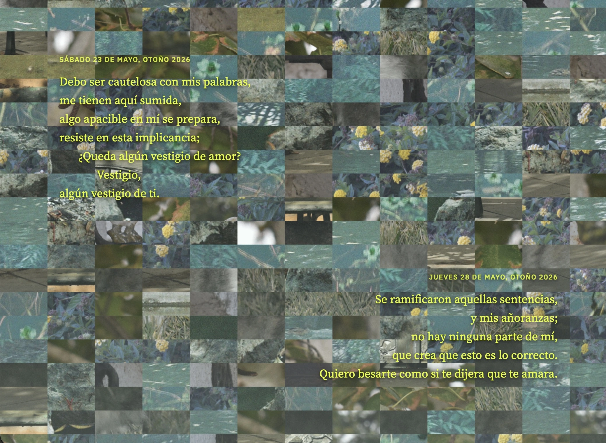
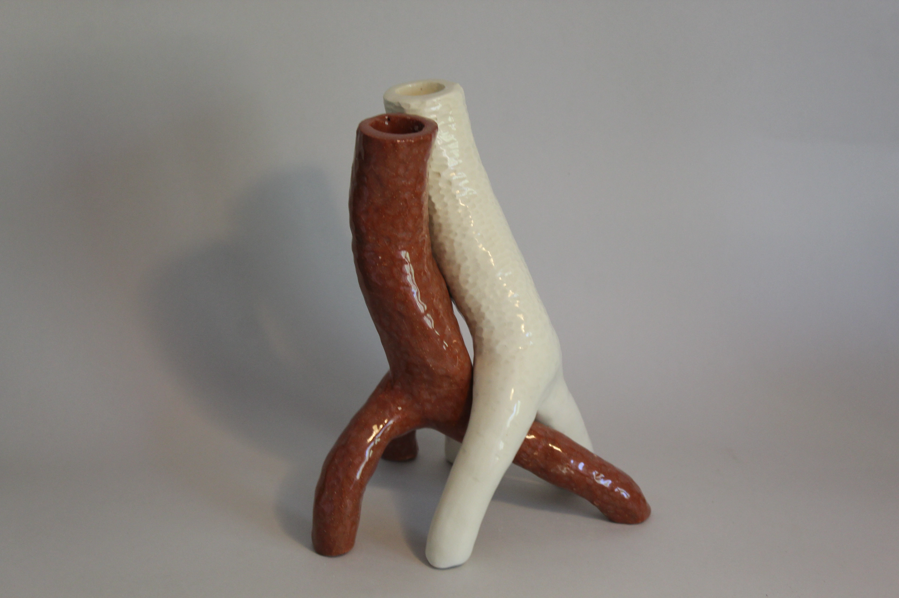
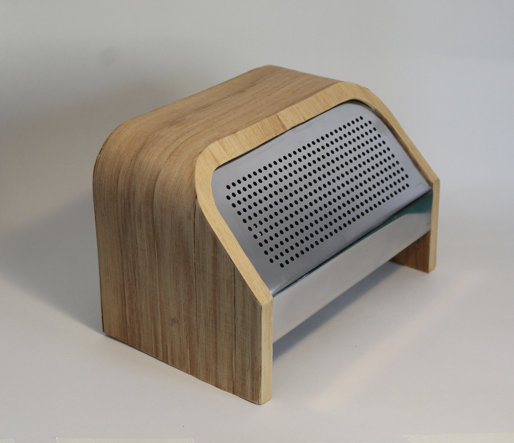
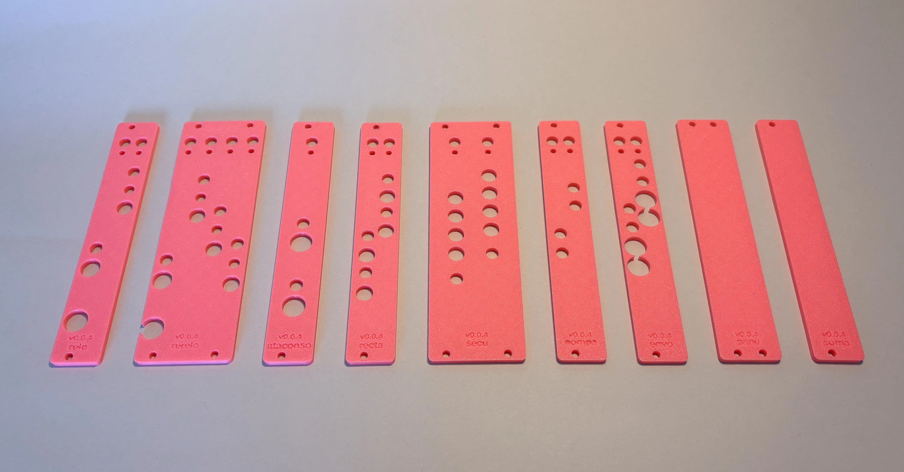
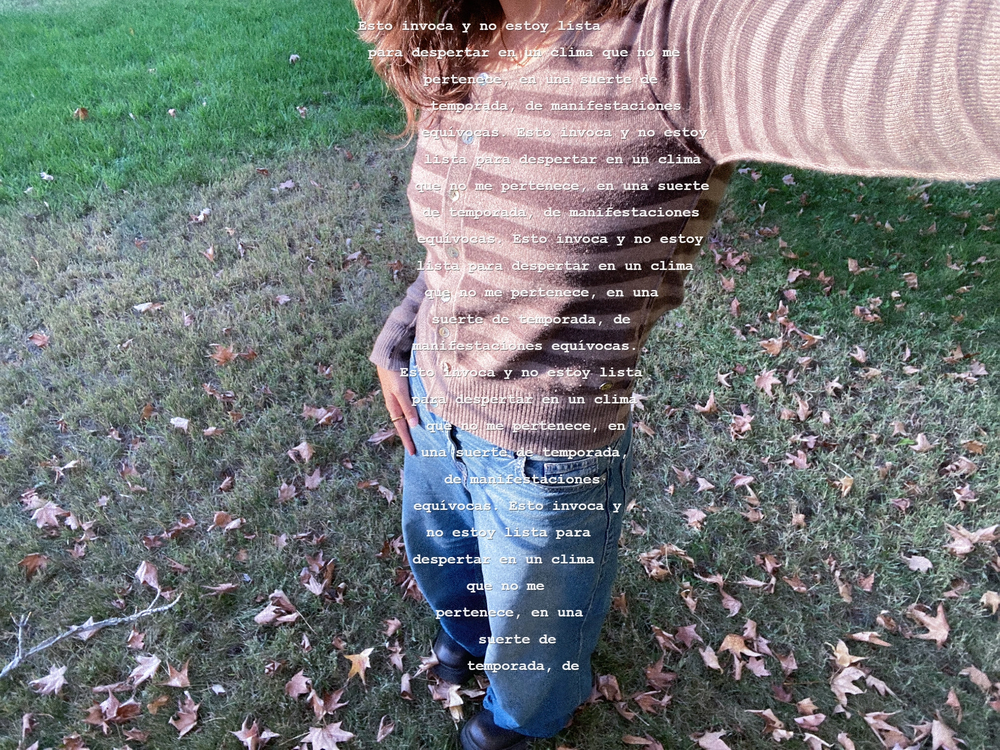
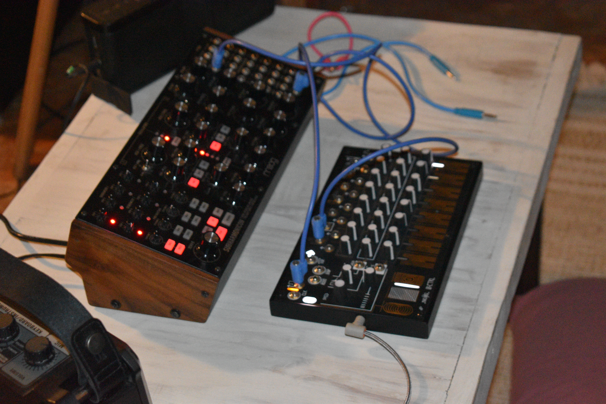
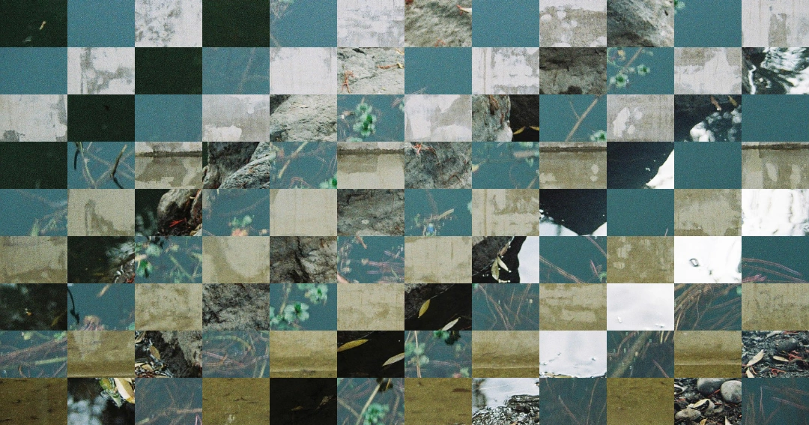
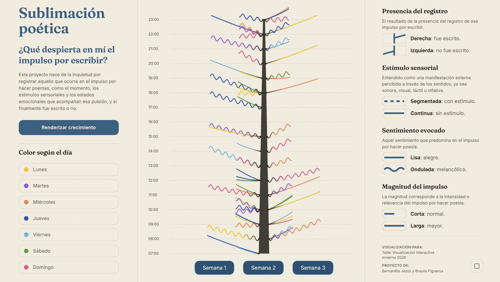
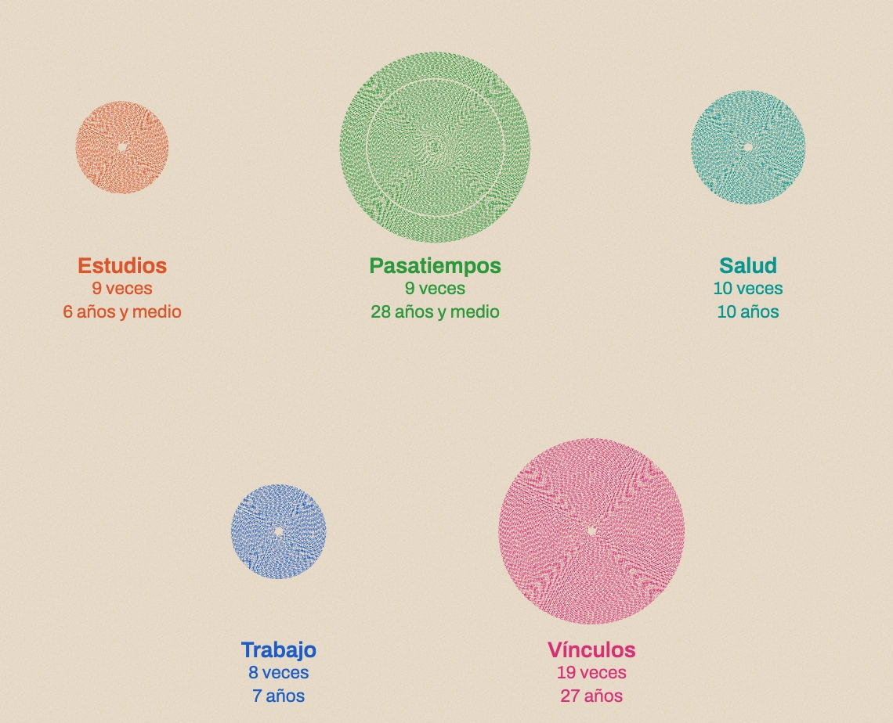

Web · Poesía · Poesía visual · 2026Web de poemas
Máquina percutora MIDI

Cerámica · 2025Candela Haustorial

Fabricación digital · 2025Parlante plegado

Diseño paramétrico · 2026Cajas y paneles Popusíntesis

Web · Poesía visual · Efecto visual · 2026Cada espacio de mí es un poema

Sonido · 2026Grabaciones de sonido

Web · Arte digital · Efecto visual · 2026Web mosaicos
Maceta rebrote urbano
Tacto48

Web · Visualización de datos · 2026Web Sublimación poética
Agregar ilustración de portada
Ilustración · Grafito · 2026
Taller de ilustración de árboles

Visualización de datos · Instalación · 2026